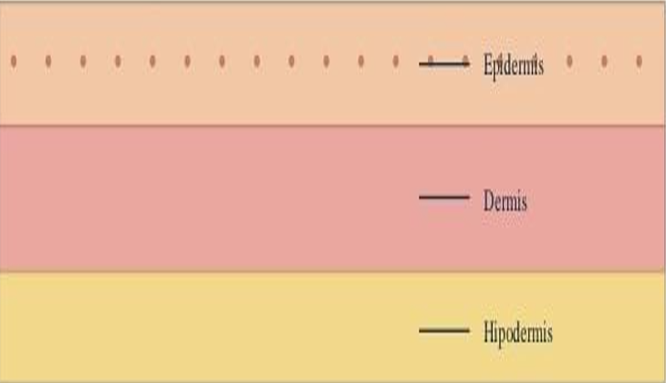
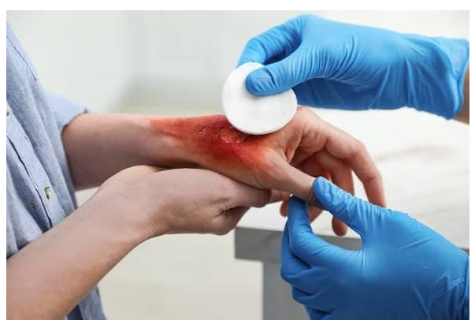
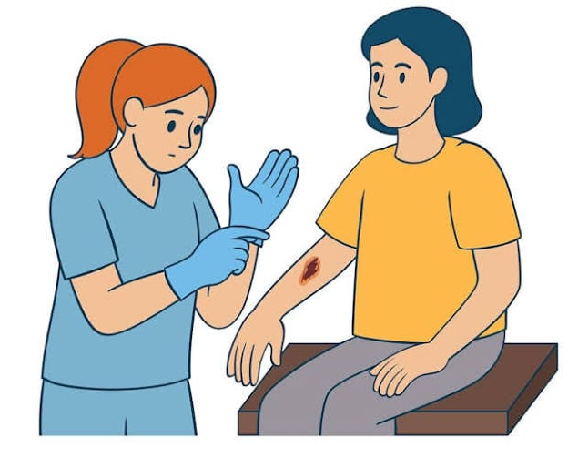

EPIDERMIS
Es la capa más externa. Está en contacto directo con el ambiente.

Formación técnica y tecnológica
Información sencilla para reconocer riesgos, prevenir accidentes y saber cómo actuar inicialmente.
Es un material educativo y preventivo. No es una rutina de ejercicios ni un programa de rehabilitación. Su objetivo es ayudar a reconocer situaciones de riesgo y conocer medidas iniciales seguras.
La piel es la cubierta externa del cuerpo. Actúa como barrera protectora y ayuda a proteger los tejidos frente al ambiente. Una quemadura puede afectar la piel y, según su profundidad y extensión, también los tejidos que se encuentran debajo.

Es la capa más externa. Está en contacto directo con el ambiente.
Capa situada debajo de la epidermis; contiene estructuras que contribuyen a las funciones de la piel.
Tejido ubicado bajo la dermis, con presencia importante de tejido graso.
La profundidad y la extensión de una quemadura influyen en su gravedad y en la atención que puede necesitar.
Existen diferentes agentes que pueden producir quemaduras. Es importante reconocerlos para prevenir accidentes.
Calor, vapor o líquidos calientes.
Sustancias corrosivas.
Corriente eléctrica.
Exposición a radiaciones.
Roce intenso.
Pueden ocurrir en la cocina, el baño, el trabajo o espacios comunitarios. Los líquidos calientes, el vapor, las superficies calientes, la electricidad y algunos productos químicos son ejemplos de peligros cotidianos.
La mayoría de las quemaduras pueden prevenirse. Identificar los riesgos y adoptar hábitos seguros ayuda a reducir accidentes.
Mantén los mangos de las ollas hacia adentro. Aleja a niñas y niños de líquidos y superficies calientes.
Revisa cables y enchufes. Evita sobrecargar las conexiones eléctricas.
Conserva los productos en sus envases identificados y evita el contacto directo.
Reduce las exposiciones innecesarias y sigue las recomendaciones de protección apropiadas.
La actuación inicial debe priorizar detener el proceso de quemadura, enfriar la zona y proteger a la persona.
Aleja a la persona de la fuente de calor o del agente que está provocando la lesión, siempre que puedas hacerlo sin ponerte en peligro.
Utiliza agua corriente fresca sobre la zona afectada. No uses hielo.
Evita manipular innecesariamente la lesión y procura que la persona esté segura mientras recibe ayuda.
Si la quemadura parece grave, es extensa o tienes dudas, solicita valoración profesional sin demora.
El enfriamiento con agua corriente fresca es una medida inicial recomendada por la OMS, según el documento base. No retrases la atención profesional cuando sea necesaria.
Puede agravar la lesión.
Evita aplicar aceites sobre la quemadura.
No coloques sustancias o preparados caseros sobre la zona afectada.
No sustituyas la valoración sanitaria por consejos informales.
Identifica riesgos en el hogar, el trabajo y la comunidad.
Detén la causa, enfría con agua corriente fresca y protege a la persona.
No apliques hielo, aceites ni remedios caseros.
Busca atención sanitaria cuando la gravedad de la lesión lo requiera o tengas dudas.
Imágenes complementarias sobre la prevención de quemaduras y los cuidados ante lesiones.

